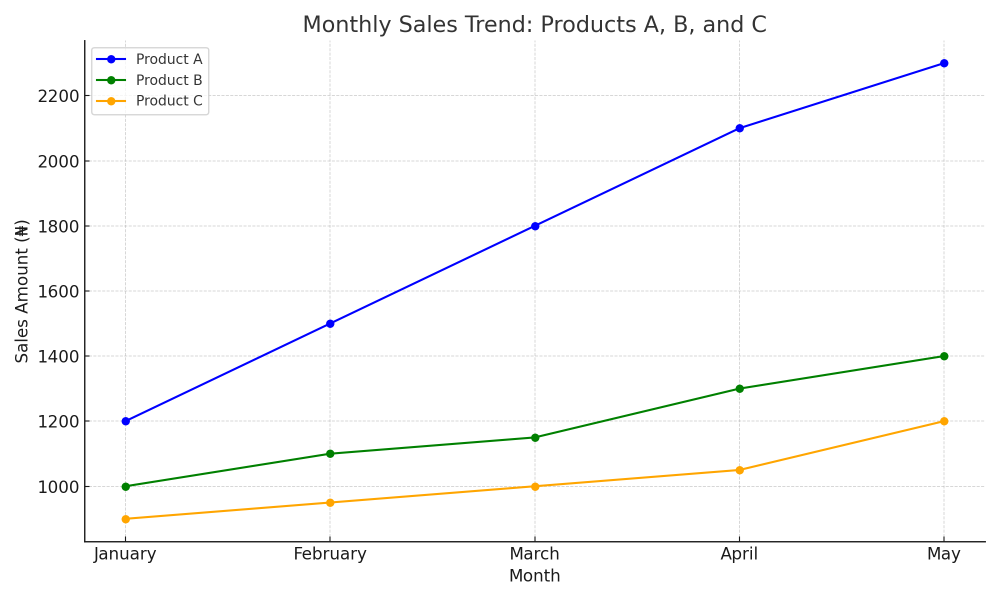

The Importance of Data Analytics in an Organization
Published on: July 25, 2025
Author: Abiola David Olaoluwa | All About Data
What is Data Analytics?
Data Analytics is the process of examining, transforming, and interpreting raw data to uncover meaningful insights, draw conclusions, and support decision-making. It involves the use of statistical tools, algorithms, and software systems to analyze trends, detect patterns, and forecast future outcomes.
In today’s fast-paced, data-driven world, the difference between a thriving organization and one that falls behind often lies in how well it understands and uses its data. Data analytics is a necessity for every organization that wants to compete, grow, and stay relevant.
1. Informed Decision-Making
At the core of data analytics is informed decision-making. Organizations can base their strategies on hard evidence, identifying market trends, evaluating customer behavior, or assessing operational efficiency.
2. Improved Operational Efficiency
Data analytics highlights inefficiencies across departments—from supply chain bottlenecks to unproductive workforce patterns. By tracking KPIs, businesses can pinpoint waste, reduce costs, and streamline processes.
3. Enhanced Customer Experience
Data analytics uncovers buying patterns, preferences, and feedback, allowing companies to tailor products, services, and communication for better customer experiences.
4. Risk Management and Fraud Detection
Analytics helps identify risks like fraudulent transactions, equipment failures, or employee burnout, protecting resources and building trust.
5. Competitive Advantage
Organizations that embrace analytics can anticipate shifts, respond quickly, and innovate effectively, staying ahead of competitors.
6. Measuring Performance and ROI
Analytics track performance against goals, ensuring resources are allocated effectively and departments are accountable.
7. Strategic Planning and Forecasting
Predictive analytics enables accurate forecasting and scenario planning, transforming planning into a science.
Conclusion
Data analytics is a strategic asset. Organizations that invest in data capabilities build a foundation for long-term success.
Practical Example: Data in Action
Imagine a company tracking monthly sales across three products (A, B, C):
| Month | Product A Sales | Product B Sales | Product C Sales |
|---|---|---|---|
| January | 1200 | 1000 | 900 |
| February | 1500 | 1100 | 950 |
| March | 1800 | 1150 | 1000 |
| April | 2100 | 1300 | 1050 |
| May | 2300 | 1400 | 1200 |
A line chart of this data highlights trends:
Product A shows the strongest upward trend, guiding resource allocation decisions.
About Us
Welcome to Abíọ́lá Blog! We share insightful articles on technology, data analytics, business, and more, aiming to inspire and inform our readers.
Contact Us
Privacy Policy
Your privacy is important to us. We collect minimal data for analytics and do not share personal information with third parties.
Terms of Service
By using Abíọ́lá Blog, you agree to our terms. Content is for informational purposes only, and we are not liable for damages from its use.
Comments